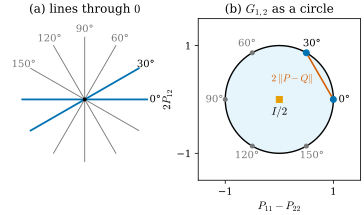
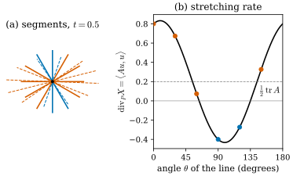

46.3 The Grassmannian: Unoriented Planes as Projections
Goals
- 방향 없는 \(d\)-plane을 orthogonal projection matrix \(P\)(\(P^{\mathsf T} = P\), \(P^2 = P\), \(\tr P = d\))로 나타내고, normal에서 \(P = I - \mathbf{N}\mathbf{N}^{\mathsf T}\)를 만들 수 있다.
- 평면의 직선 전체 \(G_{1,2}\)가 원이고 각이 두 배가 된다는 것을 보이고, 두 plane 사이의 거리 \(\norm{P - Q}\)가 둘 사이의 각의 sine이라는 것을 계산할 수 있다.
- tangential divergence \(\divg_PX = \tr(P\,DX)\)를 정의하고, 그것이 방향 \(P\)인 작은 조각이 vector field \(X\)의 flow로 늘어나는 비율이라는 것을 증명할 수 있다.
Prerequisites
- Section 46.1(방향 없는 tangent의 목록), Section 46.2(measure, test function)
- tangent plane과 unit normal(Definition 0.3.3), 납작한 Gaussian의 normal(Section 29.1), orientation과 Möbius strip(Proposition 7.5.10)
- linear algebra: orthogonal projection, symmetric matrix의 eigenvalue, trace, determinant의 미분 \(\tfrac{d}{dt}\det(I + tB)|_{t=0} = \tr B\)
Motivation
Section 46.2는 “어디에 얼마나”를 measure로 만들었다. varifold는 여기에 “어느 방향으로”를 붙인다. 그러려면 방향 없는 직선과 평면을 숫자로 다룰 수 있어야 하고, 두 방향이 “가깝다”를 잴 수 있어야 한다. unit normal \(\mathbf{N}\)은 부호가 문제이고(Section 46.1), 각도는 차원이 높아지면 하나의 숫자로 부족하다. 네 논문은 모두 같은 답을 쓴다. 평면을 그 평면으로의 orthogonal projection matrix로 나타낸다. 이 절은 그 표현과 그 위의 거리, 그리고 first variation(Section 46.5)의 핵심이 되는 tangential divergence를 준비한다.
Planes as Projection Matrices
\(\R^n\)의 \(d\)차원 linear subspace \(S\)(원점을 지나는 \(d\)-plane)마다 orthogonal projection \(P_S\colon\R^n \to S\)가 하나 있다. \(S\)의 orthonormal basis \(u_1, \dots, u_d\)를 잡으면
이다. 둘째 식은 hyperplane(\(\R^3\)의 평면)을 unit normal \(\mathbf{N}\)으로 쓴 것이다. 두 식 모두 basis나 normal의 부호에 의존하지 않는다. \(\mathbf{N}\)을 \(-\mathbf{N}\)으로 바꿔도 \(\mathbf{N}\mathbf{N}^{\mathsf T}\)는 그대로다. 그래서 \(P_S\)는 방향 없는 plane 자체의 이름이 된다. [ManifoldGS26, eq. (3)]이 Gaussian의 tangent plane을 \(P_i = u_iu_i^{\mathsf T} + v_iv_i^{\mathsf T} = I - n_in_i^{\mathsf T}\)로 쓰는 것이 바로 이것이다.
Definition 46.3.1 (Grassmannian). \(\R^n\)의 \(d\)차원 linear subspace 전체의 집합을 Grassmannian(그라스만 다양체) \(G_{d,n}\)이라 한다. 이 장에서는 \(S \in G_{d,n}\)을 orthogonal projection matrix \(P_S\)와 같은 것으로 보고, 그 matrix를 그냥 \(S\) 또는 \(P\)라 쓴다.
Proposition 46.3.2 (planes are projection matrices). \(n \times n\) matrix \(P\)가 어떤 \(S \in G_{d,n}\)으로의 orthogonal projection인 것은 \(P^{\mathsf T} = P\), \(P^2 = P\), \(\tr P = d\)인 것과 동치다. 이때 \(S = \operatorname{im}P\)이고, \(I - P\)는 orthogonal complement \(S^\perp\)로의 projection이다.
Proof. (46.3.1)의 \(P\)는 분명히 symmetric이고, \(u_i^{\mathsf T}u_j = \delta_{ij}\)에서 \(P^2 = P\)이고, \(\tr P = \sum\abs{u_i}^2 = d\)이다. 거꾸로 \(P\)가 symmetric이면 orthonormal eigenvector로 대각화되고, \(P^2 = P\)이면 eigenvalue가 \(\lambda^2 = \lambda\), 곧 \(0\) 또는 \(1\)이다. \(\tr P = d\)이므로 \(1\)이 \(d\)번 나온다. eigenvalue \(1\)의 eigenvector \(u_1, \dots, u_d\)로 \(P = \sum u_iu_i^{\mathsf T}\)이고, 이것은 \(S = \operatorname{span}(u_i)\)로의 orthogonal projection이다. \(I - P\)는 eigenvalue를 바꾼 것이므로 \(S^\perp\)로의 projection이다.
matrix로 보면 좋은 점이 셋 있다. 첫째, 부호 문제가 사라진다. 둘째, matrix끼리의 거리로 plane 사이의 거리를 잴 수 있다. 셋째, \(G_{d,n}\)은 \(\norm{P}_F = \sqrt d\)인 matrix들의 closed set이므로 compact하다. 이 compactness 덕분에 위치와 plane을 함께 담는 공간 \(\Omega \times G_{d,n}\)에서도 Theorem 46.2.9의 compactness가 위치 쪽 조건만으로 성립한다(Section 46.4). 덧붙여 \(G_{d,n}\)은 차원이 \(d(n - d)\)인 smooth manifold이지만, 이 장에서는 그 구조를 쓰지 않는다.
Example 46.3.3 (lines in the plane: \(G_{1,2}\) is a circle). \(\R^2\)에서 \(x\)축과 각 \(\theta\)를 이루는 직선의 projection은
\[ \begin{aligned} P(\theta) &= \begin{pmatrix}\cos^2\theta & \cos\theta\sin\theta \\ \cos\theta\sin\theta & \sin^2\theta\end{pmatrix} \\ &= \frac12\begin{pmatrix}1 + \cos2\theta & \sin2\theta \\ \sin2\theta & 1 - \cos2\theta\end{pmatrix} \end{aligned} \]
이다. \(P\)는 두 숫자 \((P_{11} - P_{22}, 2P_{12}) = (\cos2\theta, \sin2\theta)\)로 정해지고, 이 점은 unit circle 위에 있다. 각이 두 배가 되므로 \(\theta\)와 \(\theta + \pi\)(같은 직선)가 같은 점을 준다. 가로선 \(P_h = P(0)\)은 \((1, 0)\), 세로선 \(P_v = P(\pi/2)\)는 \((-1, 0)\), \(45^\circ\)선은 \((0, 1)\)이다. 곧 \(G_{1,2}\)는 원이다. 원 안쪽의 점, 예를 들어 중심 \((0, 0)\)은 \(\tfrac12I\)이고, 이것은 projection의 평균일 수는 있지만(\(\tfrac12(P_h + P_v) = \tfrac12I\)) projection은 아니다(\((\tfrac12I)^2 \ne \tfrac12I\)).
Verification: verify/v-46-3-grassmannian.py
Figure 46.3.1(a)는 \(30^\circ\) 간격의 직선 여섯 개이고, (b)는 그 projection을 위의 좌표에 찍은 것이다. (a)에서 반 바퀴(\(180^\circ\))를 돌면 같은 직선으로 돌아오는데, (b)에서는 원을 한 바퀴 돈다. \(0^\circ\)와 \(30^\circ\)(파랑)는 (b)에서 \(60^\circ\) 떨어져 있다. 주황 사각형이 중심 \(\tfrac12I\)이다. staircase의 tangent는 절반이 \(P_h\), 절반이 \(P_v\)였는데(Example 46.1.2), 그 평균이 바로 이 중심이다. 평균은 어떤 직선도 아니다. 그래서 varifold는 tangent의 평균이 아니라 distribution 전체를 기억해야 한다(Section 46.4).

Distance Between Planes
matrix로 나타냈으니 matrix norm으로 거리를 잴 수 있다. [BLM17, §1]은 operator norm \(\norm{P - Q} = \max_{\abs{v} = 1}\abs{(P - Q)v}\)를, [ManifoldGS26, eq. (6)]은 Frobenius norm \(\norm{P - Q}_F\)를 쓴다. 두 값은 각으로 간단히 쓰인다.
Proposition 46.3.4 (distance between planes). (a) 두 직선(unit vector \(u, v\), 사이의 각 \(\theta\))의 projection \(P, Q\)에 대해
이다. normal 사이의 각이 \(\theta\)인 두 hyperplane에서도 같다. (b) 일반적으로 \(P, Q \in G_{d,n}\)이면 \(\norm{P - Q}\)는 두 plane 사이의 가장 큰 principal angle의 sine이고, 언제나 \(\le 1\)이다.
Proof. (a) \(P - Q = uu^{\mathsf T} - vv^{\mathsf T}\)는 \(\operatorname{span}(u, v)\)의 orthogonal complement에서 \(0\)이고, \(\operatorname{span}(u, v)\) 위에서는 trace가 \(0\)인 symmetric matrix다. 그 determinant는 \(u\)와 \(u^\perp\)를 basis로 계산하면 \(-\sin^2\theta\)이므로 eigenvalue는 \(\pm\abs{\sin\theta}\)이다. operator norm은 가장 큰 eigenvalue의 절댓값, Frobenius norm은 eigenvalue 제곱합의 제곱근이다. hyperplane이면 \(P - Q = (I - \mathbf{N}\mathbf{N}^{\mathsf T}) - (I - \mathbf{M}\mathbf{M}^{\mathsf T})\) \(= \mathbf{M}\mathbf{M}^{\mathsf T} - \mathbf{N}\mathbf{N}^{\mathsf T}\)이므로 직선의 경우로 돌아간다. (b) principal angle \(\theta_1 \le \dots \le \theta_d\)는 orthonormal basis matrix \(U, V\)에 대해 \(U^{\mathsf T}V\)의 singular value를 \(\cos\theta_i\)로 쓴 것이다. 표준적인 linear algebra 결과(subspace 사이의 거리, 예를 들어 [GolubVanLoan13])가 \(\norm{P - Q} = \sin\theta_d\)를 준다. 증명은 생략하고 verify에서 무작위 plane으로 확인한다.
Figure 46.3.1(b)에서 이것은 “현의 절반”이다. 각 \(\theta\)인 두 직선은 원 위에서 \(2\theta\) 떨어져 있고, 그 현의 길이 \(2\abs{\sin\theta}\)의 절반이 \(\norm{P - Q}\)다. 거리는 \(\theta = 90^\circ\)(수직)에서 최대 \(1\)이고, \(\theta\)와 \(180^\circ - \theta\)가 같은 거리를 준다. 방향 없는 직선 사이의 각은 \(90^\circ\)를 넘지 않기 때문이다.
위치와 plane을 함께 잴 때는 두 거리를 더한다. \(\Omega \times G_{d,n}\)의 두 점 \((x, P)\), \((y, Q)\) 사이의 거리를 \(\abs{x - y} + \norm{P - Q}\)로 둔다. [BLM17]의 bounded Lipschitz distance(Section 46.7)에서 test function의 Lipschitz 조건이 이 거리로 재어진다. 위치가 \(h\)만큼, plane이 각 \(\theta\)만큼 다르면 test function의 값은 \(h + \abs{\sin\theta}\) 이하로만 달라질 수 있다.
Tangential Divergence: How Fast a Plane Piece Stretches
first variation(Section 46.5)은 surface를 vector field \(X\)로 밀 때 넓이가 얼마나 빨리 변하는지를 묻는다. 넓이는 작은 조각의 넓이를 더한 것이므로, 먼저 방향이 \(P\)인 작은 조각 하나가 얼마나 빨리 늘어나는지 알면 된다. 답은 \(P\)와 \(X\)의 Jacobian \(DX\)만으로 정해진다.
Definition 46.3.5 (tangential divergence). \(X\colon\Omega \to \R^n\)이 \(C^1\) vector field이고 \(DX\)가 그 Jacobian(\((DX)_{jk} = \partial X_j/\partial x_k\))일 때, \(P \in G_{d,n}\)에 대해
를 \(X\)의 \(P\) 방향 tangential divergence(접방향 발산)라 한다. 여기서 \(u_1, \dots, u_d\)는 \(P\)의 orthonormal basis다.
두 식이 같은 것은 \(\tr(P\,DX) = \tr(DX\,UU^{\mathsf T}) = \tr(U^{\mathsf T}DX\,U)\)(\(U = [u_1 \cdots u_d]\))이기 때문이다. \(P = I\)(\(d = n\))이면 보통의 divergence \(\divg X = \tr DX\)이다. 곧 tangential divergence는 divergence를 \(P\) 방향의 \(d\)개 축으로만 더한 것이다. [BLM17, §2.1]은 같은 양을 \(\sum_j\inner{P\nabla X_j}{e_j}\)로 쓴다(\(\nabla X_j\)는 \(DX\)의 \(j\)번째 행).
Proposition 46.3.6 (tangential divergence is the stretching rate). \(\varphi_t\)를 \(X\)의 flow라 하자(\(\varphi_0 = \mathrm{id}\), \(\partial_t\varphi_t = X\circ\varphi_t\)). 점 \(x\)에서 \(P \in G_{d,n}\)의 orthonormal basis \(u_1, \dots, u_d\)가 만드는 unit cube를 \(D\varphi_t(x)\)로 옮긴 parallelepiped의 \(d\)차원 부피를 \(J_t\)라 하면
이다.
Proof. \(D\varphi_t(x) = I + t\,DX(x) + O(t^2)\)이다. 옮긴 벡터 \(w_i = D\varphi_t(x)u_i\)의 Gram matrix는
\[ \begin{aligned} G_{ij} &= \inner{w_i}{w_j} = \delta_{ij} + t\,c_{ij} + O(t^2), \\ c_{ij} &= \inner{DX\,u_i}{u_j} + \inner{u_i}{DX\,u_j} \end{aligned} \]
이다. \(J_t = \sqrt{\det G}\)이고 \(\det(I + tB) = 1 + t\tr B + O(t^2)\)이므로 \(\det G = 1 + t\sum_ic_{ii} + O(t^2)\) \(= 1 + 2t\sum_i\inner{DX\,u_i}{u_i} + O(t^2)\), \(J_t = 1 + t\sum_i\inner{DX\,u_i}{u_i} + O(t^2)\)이다. (46.3.3)과 같다.
\(d = 1\)이면 이것은 “방향 \(u\)인 짧은 선분이 늘어나는 비율은 \(\inner{DX\,u}{u}\)”라는 말이다. \(X\)의 \(u\) 방향 미분 \(DX\,u\) 가운데 \(u\) 방향 성분만 길이를 바꾸고, 수직 성분은 선분을 돌릴 뿐이다. 같은 식을 Track 2의 Chapter 32에서 curve의 길이를 미분할 때 이미 썼다(Proposition 32.2.3). surface의 넓이를 미분할 때는 이 비율을 surface 전체에서 적분한다. 그것이 Section 46.5의 first variation \(\delta V(X) = \int\divg_PX\,dV\)다.
Figure 46.3.2는 linear vector field \(X(x) = Ax\), \(A = \begin{pmatrix}0.8 & 0.5 \\ -0.1 & -0.4\end{pmatrix}\)에서 이 비율을 본 것이다. \(DX = A\)가 상수이므로 비율은 위치와 무관하고 방향에만 의존한다. (a)에서 길이 \(2\)인 선분 여섯 개(실선)를 flow로 \(t = 0.5\)만큼 옮기면 점선이 된다. 주홍 선분은 늘어나고 파란 선분(\(90^\circ\), \(120^\circ\))은 줄어든다. (b)는 비율 \(\inner{Au}{u} = 0.2 + 0.6\cos2\theta + 0.2\sin2\theta\)를 각 \(\theta\)의 함수로 그린 것이다. \(0^\circ\)에서 \(0.8\), \(90^\circ\)에서 \(-0.4\)이고, 최대 \(0.8325\), 최소 \(-0.4325\)다. 점선은 그 평균 \(\tfrac12\tr A = 0.2\)다. 모든 방향에 대한 평균이 \(\tfrac{d}{n}\divg X\)라는 것은 \(P(\theta)\)의 평균이 \(\tfrac12I\)라는 것(Example 46.3.3)과 같은 사실이다.

Example 46.3.7 (the sphere). 반지름 \(r\)인 sphere의 점 \(x\)에서 tangent plane은 \(P(x) = I - xx^{\mathsf T}/r^2\)이다. 세 vector field의 tangential divergence를 구하자.
- \(X(x) = x\)(확대): \(DX = I\)이므로 \(\divg_PX = \tr P = 2\)이다. 넓이 \(4\pi r^2\)는 \((1 + t)^2\)배가 되므로 변화율이 \(2\cdot4\pi r^2 = \int2\,dA\)로 맞다.
- \(X = \) 상수 vector(평행 이동): \(DX = 0\)이므로 \(0\)이다. 넓이가 변하지 않는다.
- \(X(x) = (0, 0, z)\)(\(z\) 방향으로만 늘이기): \(DX = e_3e_3^{\mathsf T}\)이므로 \(\divg_PX = 1 - z^2/r^2\)이다. 적분하면 \(\int(1 - z^2/r^2)\,dA\) \(= 4\pi r^2 - \tfrac43\pi r^2 = \tfrac83\pi r^2\)이고, 이것은 sphere를 \(z\) 방향으로 \((1 + t)\)배 늘인 spheroid의 넓이의 변화율과 같다. 세 축으로 늘이는 것을 더하면 확대이므로 \(3\cdot\tfrac83\pi r^2 = 8\pi r^2\)으로 첫째 경우와 맞는다.
Verification: verify/v-46-3-grassmannian.py
Summary
- 방향 없는 \(d\)-plane은 orthogonal projection matrix \(P\)(\(P^{\mathsf T} = P\), \(P^2 = P\), \(\tr P = d\))와 같다. hyperplane은 \(P = I - \mathbf{N}\mathbf{N}^{\mathsf T}\)이고 \(\mathbf{N}\)의 부호를 보지 않는다. 그 전체가 compact한 Grassmannian \(G_{d,n}\)이다(Definition 46.3.1, Proposition 46.3.2).
- \(G_{1,2}\)는 원이고 각이 두 배가 된다. 원 안쪽은 projection의 평균이고, 중심 \(\tfrac12I\)는 어떤 직선도 아니다(Example 46.3.3).
- 각 \(\theta\)인 두 직선(또는 hyperplane) 사이의 거리는 \(\norm{P - Q} = \abs{\sin\theta}\), \(\norm{P - Q}_F = \sqrt2\abs{\sin\theta}\)이다((46.3.2)). 위치와 plane은 \(\abs{x - y} + \norm{P - Q}\)로 함께 잰다.
- tangential divergence \(\divg_PX = \tr(P\,DX)\)는 방향 \(P\)인 작은 조각이 \(X\)의 flow로 늘어나는 비율이다((46.3.4)).
다음 절에서는 지금까지의 재료를 합친다. 위치와 plane의 product space \(\R^n \times G_{d,n}\) 위의 Radon measure가 varifold다. smooth surface, polygon, point cloud, staircase의 극한이 모두 varifold이고, 위치만 남긴 mass \(\norm{V}\)와 점마다의 plane의 distribution으로 나누어 읽을 수 있다.
Quick check
Exercise 46.3.1 ★ (a) \(\R^2\)에서 \((3, 4)\)를 지나는 직선의 projection matrix를 구하여라. (b) \(\R^3\)에서 normal이 \((1, 1, 1)\)인 평면의 projection matrix를 구하고 \(P^2 = P\), \(\tr P = 2\)를 확인하여라.
Solution
(a) \(u = (0.6, 0.8)\)이므로 \(P = uu^{\mathsf T} = \begin{pmatrix}0.36 & 0.48 \\ 0.48 & 0.64\end{pmatrix}\)이다. (b) \(\mathbf{N} = (1, 1, 1)/\sqrt3\)이므로 \(P = I - \tfrac13J\)(\(J\)는 모든 성분이 \(1\)인 matrix), 곧 대각 성분 \(\tfrac23\), 나머지 \(-\tfrac13\)이다. \(J^2 = 3J\)이므로 \(P^2 = I - \tfrac23J + \tfrac19\cdot3J = P\)이고, \(\tr P = 3 - 1 = 2\)이다. \(\mathbf{N}\) 대신 \(-\mathbf{N}\)을 써도 같은 \(P\)가 나온다.
Verification: verify/v-46-3-grassmannian.py
Exercise 46.3.2 ★ \(x\)축과 \(30^\circ\)를 이루는 직선과 \(x\)축 사이의 \(\norm{P - Q}\)와 \(\norm{P - Q}_F\)를 구하고, Figure 46.3.1(b)의 현의 길이로 확인하여라. \(150^\circ\)를 이루는 직선이면 어떤가?
Solution
(46.3.2)에서 \(\norm{P - Q} = \sin30^\circ = 0.5\), \(\norm{P - Q}_F = \sqrt2\cdot0.5 = 0.7071\)이다. (b)에서 두 점은 \((1, 0)\)과 \((\cos60^\circ, \sin60^\circ)\)이고 현의 길이는 \(2\sin30^\circ = 1\)이므로 그 절반 \(0.5\)와 맞는다. \(150^\circ\)인 직선은 \(-30^\circ\)인 직선과 같으므로 거리도 같다. \(\abs{\sin150^\circ} = 0.5\)이다.
Verification: verify/v-46-3-grassmannian.py
Exercise 46.3.3 ★ \(\tfrac12(P_h + P_v)\), \(\tfrac12(P_{45^\circ} + P_{135^\circ})\), 그리고 모든 직선에 대한 평균 \(\tfrac1\pi\int_0^\pi P(\theta)\,d\theta\)를 구하여라. tangent의 “평균 projection”만 기억하면 무엇을 잃는가?
Solution
셋 다 \(\tfrac12I\)이다. 앞의 둘은 직접 더하면 되고, 마지막은 Example 46.3.3의 식에서 \(\cos2\theta\)와 \(\sin2\theta\)의 평균이 \(0\)이기 때문이다. 곧 가로·세로가 반씩인 staircase의 극한, \(\pm45^\circ\)가 반씩인 zigzag의 극한(Exercise 46.1.2), 방향이 고르게 퍼진 잡음이 평균으로는 구별되지 않는다. 또 \(\tfrac12I\)는 projection이 아니므로 어떤 tangent line도 아니다. varifold가 점마다 plane의 distribution 전체(Section 46.4의 Young measure)를 기억하는 이유다.
Verification: verify/v-46-3-grassmannian.py
Exercise 46.3.4 ★★ Figure 46.3.2의 \(A\)에서 1차까지 길이가 변하지 않는 직선의 방향을 모두 구하여라. 또 \(A\)를 \(A + \lambda I\)로 바꾸면 \(\divg_PX\)는 어떻게 변하는가? \(A\)를 antisymmetric matrix(rotation의 generator)로 바꾸면?
Solution
\(\inner{Au}{u} = 0.8c^2 + 0.4cs - 0.4s^2\)(\(c = \cos\theta\), \(s = \sin\theta\))이다. \(c \ne 0\)이면 \(\tau = \tan\theta\)로 나누어 \(-0.4\tau^2 + 0.4\tau + 0.8 = 0\), 곧 \(\tau^2 - \tau - 2 = 0\)이고 \(\tau = 2\) 또는 \(-1\)이다. 방향은 \(\arctan2 = 63.43^\circ\)와 \(135^\circ\)다. \(A + \lambda I\)이면 \(\inner{(A + \lambda I)u}{u} = \inner{Au}{u} + \lambda\)이므로 모든 방향의 비율이 \(\lambda\)만큼 는다(\(\lambda I\)는 균일한 확대). antisymmetric \(A\)이면 \(\inner{Au}{u} = 0\)이므로 모든 방향에서 \(0\)이다. rotation은 길이를 바꾸지 않는다.
Verification: verify/v-46-3-grassmannian.py
Exercise 46.3.5 ★ \(\R^3\)의 두 평면의 normal \(n, m\)이 각 \(\theta\)를 이룰 때 \(\norm{P - Q}\)를 \(\inner{n}{m}\)으로 쓰고, \(\theta = 5^\circ\)에서 \(1 - \abs{\inner{n}{m}}\)과 비교하여라.
Solution
Proposition 46.3.4(a)에서 \(\norm{P - Q} = \abs{\sin\theta} = \sqrt{1 - \inner{n}{m}^2}\)이다. \(\theta = 5^\circ\)이면 \(\sin\theta = 0.0872\)이고 \(1 - \cos\theta = 0.0038\)이다. 작은 각에서 \(1 - \cos\theta \approx \theta^2/2\), \(\sin\theta \approx \theta\)이므로 앞의 것이 훨씬 작다. 둘 다 \(n \mapsto -n\)에 불변이지만, \(\norm{P - Q}\)는 작은 각에서 각에 거의 비례하는 진짜 거리(삼각 부등식을 만족)이고 \(1 - \abs{\cos\theta}\)는 그렇지 않다.
Verification: verify/v-46-3-grassmannian.py